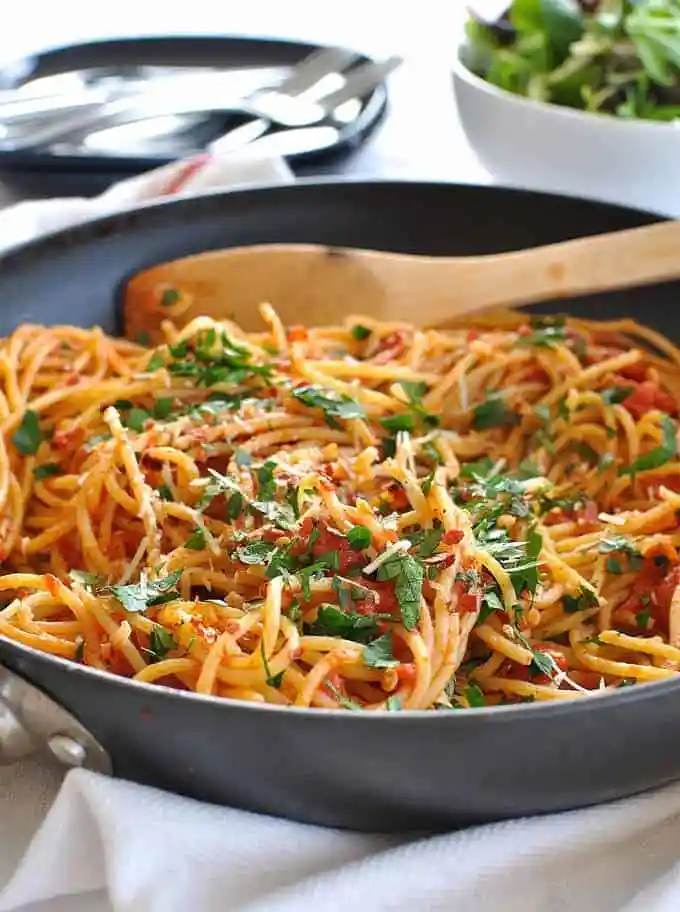

Pasta

Description
AMATRICE SPAGHETTI (SPAGHETTI ALL’AMATRICIANA):
Ingredients
- 2 tbsp olive oil
- garlic cloves crushed
- 1/2 browm onion, diced
- 400g crushed tinned tomatoes
Steps
- Heat oil
- Add garlic , toss pasta and water
- Toss parsley and serve with parmesan